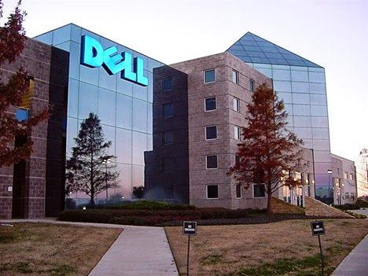

About Us

Dell is an American company that develops, sells, repairs, and supports computers and related products and services, and is owned by its parent company of Dell Technologies. Founded in 1984 by Michael Dell, the company is one of the largest technology corporations in the world, employing more than 165,000 people in the U.S. and around the world.[4][5]
Dell sells personal computers (PCs), servers, data storage devices, network switches, software, computer peripherals, HDTVs, cameras, printers, and electronics built by other manufacturers. The company is well known for its innovations in supply chain management and electronic commerce, particularly its direct-sales model and its "build-to-order" or "configure to order" approach to manufacturing—delivering individual PCs configured to customer specifications.[6][5] Dell was a pure hardware vendor for much of its existence, but with the acquisition in 2009 of Perot Systems, Dell entered the market for IT services. The company has since made additional acquisitions in storage and networking systems, with the aim of expanding their portfolio from offering computers only to delivering complete solutions[buzzword] for enterprise customers.[7][8]
Dell was listed at number 51 in the Fortune 500 list until 2014.[9] Its rank is 34th on the Fortune 500 currently.[10] It is the world's 3rd largest personal computer vendor by unit sales as of January 2021, following Lenovo and HP Inc..[11] Dell is the largest shipper of PC monitors worldwide.[12] Dell is the sixth-largest company in Texas by total revenue, according to Fortune magazine.[13] It is the second-largest non-oil company in Texas (behind AT&T) and the largest company in the Greater Austin area.[14] After going private in 2013, the newly confidential nature of its financial information prevents the company from being ranked by Fortune. It was a publicly traded company (Nasdaq: DELL), as well as a component of the NASDAQ-100 and S&P 500, until it was taken private in a leveraged buyout which closed on October 30, 2013.
In 2015, Dell acquired the enterprise technology firm EMC Corporation; following the completion of the purchase, Dell and EMC became divisions of Dell Technologies. Dell EMC as a part of Dell Technologies focus on data storage, information security, virtualization, analytics, cloud computing and other related products and services
- Beyond physical health, cosmetics can help to improve our mood
- Enhance our appearance and boost our self-esteem
- They can also help to exhibit personal style